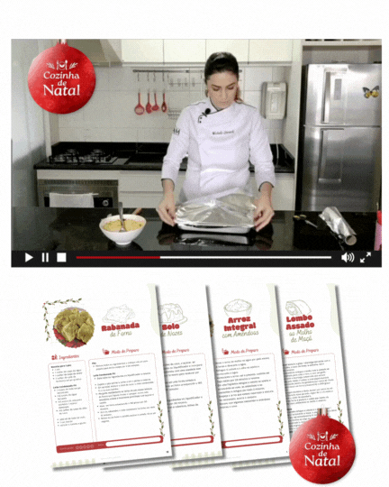
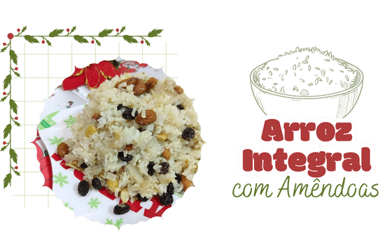
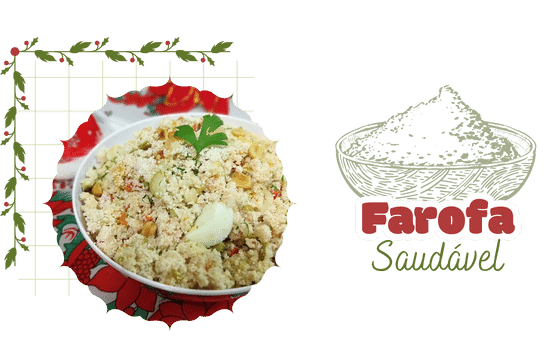
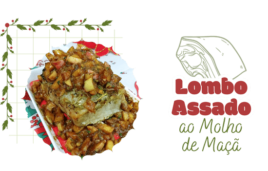
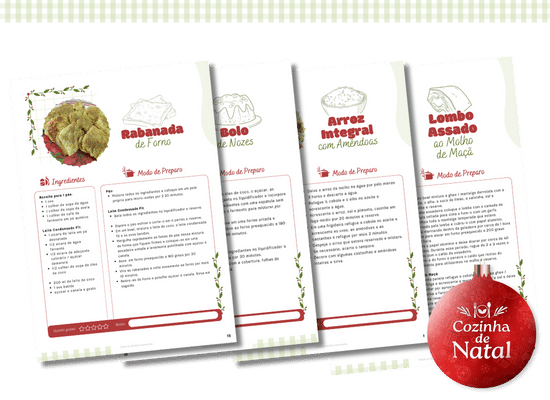

NO COZINHA DE NATAL VOCÊ VAI ENCONTRAR UMA CEIA COMPLETA, SEM PRECISAR GASTAR TEMPO E DINHEIRO COM RECEITAS QUE NEM SEMPRE DÃO CERTO OU ENCOMENDANDO A SUA CEIA.
Para quem quer comer bem sem passar horas na cozinha e sem gastar uma fortuna.
Para quem quer oferecer uma ceia completa saudável com receitas mais gostosas que as originais.
NO COZINHA DE NATAL:
VOCÊ TERÁ
10 receitas fáceis, saudáveis e gostosas gravadas em vídeo aula;
Opções salgadas para a sua ceia: Arroz integral com amêndoas, Farofa saudável, Salpicão funcional, Lombo assado ao molho de maçã e Peito de peru ao molho de laranja e mel;
Opções doces para a sua ceia: Biscoito de gengibre, Bolo de nozes, Rabanada de forno, Panetone e Chocotone sem glúten;
Livro Digital 100% ilustrado com todas as receitas do curso.

As receitas foram categorizadas em 5 opções salgadas e 5 opções doces para transformar a sua mesa em uma ceia completa e típica natalina...



RECEITAS 100% ILUSTRADAS,
MATERIAL PARA DOWNLOAD
DÊ SUA NOTA PARA CADA RECEITA
E REGISTRE SUAS OBSERVAÇÕES PARA CADA UMA DELAS.

Você terá acesso a receitas detalhadas em vídeo como: geladinho de frutas, leite condensado, bombom trufado, canjica, bolo mesclado e waffle sem farinha e receberá um Livro Digital com todas as receitas.
Nessas aulas você vai aprender a fazer kits que facilitarão a sua rotina do dia a dia, receitas rápidas de micro-ondas como pão de aveia e bolinho de cacau entre outras sugestões de facilidades que te ajudarão a ganhar tempo e economizar com lanches fora de casa e receberá um Livro Digital com todas as receitas.